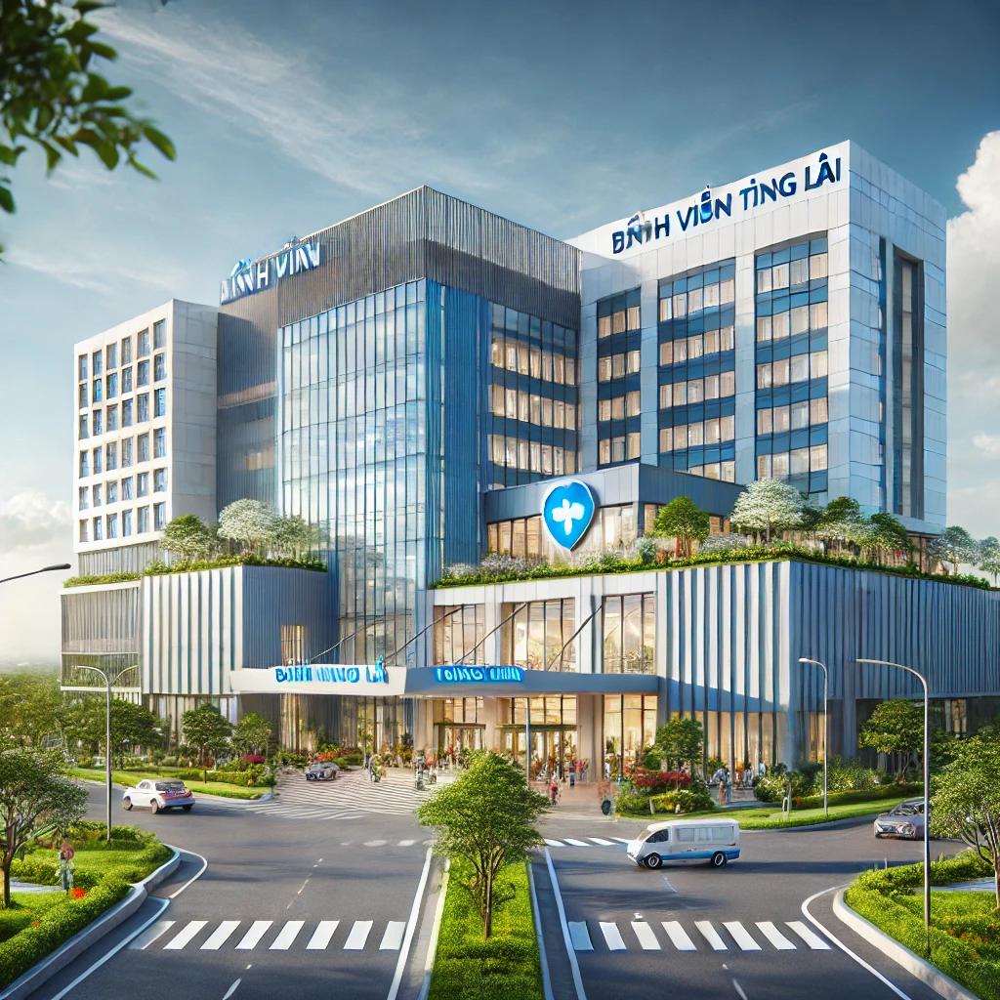
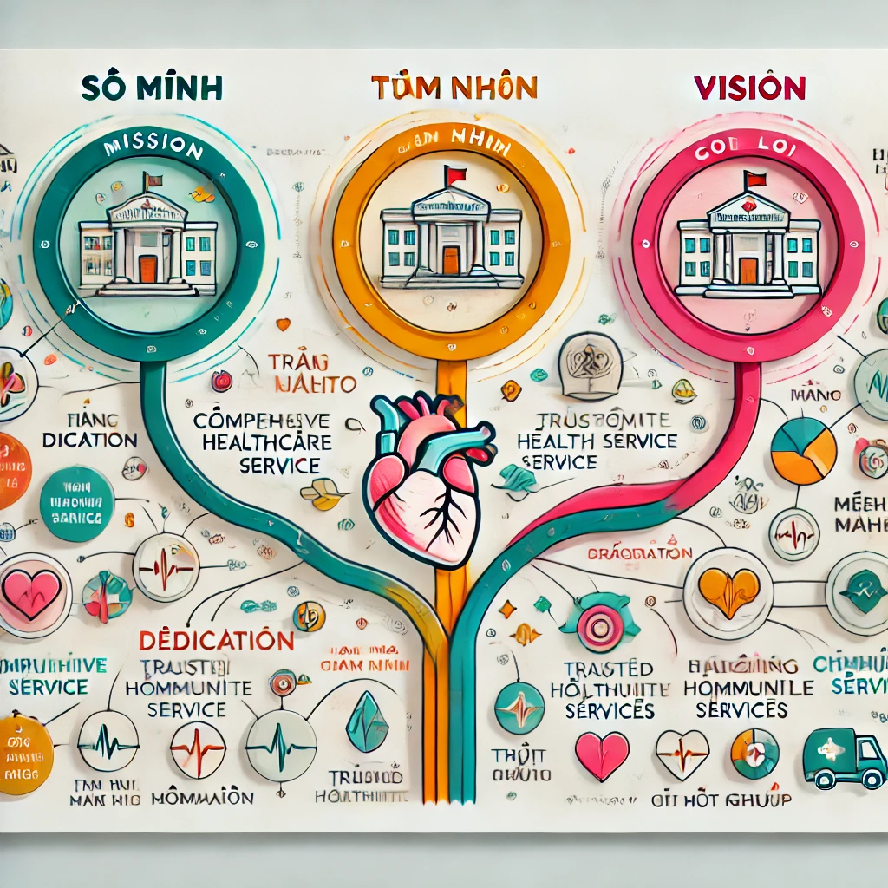

Giới thiệu về Bệnh viện Tương Lai

Bệnh viện Tương Lai tự hào là một trong những bệnh viện hiện đại và uy tín hàng đầu tại Việt Nam. Với đội ngũ y bác sĩ giàu kinh nghiệm, tận tâm, cùng cơ sở vật chất tiên tiến và hệ thống trang thiết bị đạt chuẩn quốc tế, chúng tôi cam kết mang đến dịch vụ chăm sóc sức khỏe toàn diện và chất lượng cao cho cộng đồng. Bệnh viện Tương Lai không chỉ là nơi điều trị bệnh, mà còn là một địa điểm uy tín, nơi người dân có thể gửi gắm sức khỏe của mình với sự yên tâm tuyệt đối.

Sứ mệnh
Chúng tôi hướng đến việc cung cấp dịch vụ y tế toàn diện, chất lượng cao, đáp ứng mọi nhu cầu về chăm sóc sức khỏe của người dân. Sứ mệnh của Bệnh viện Tương Lai là xây dựng một cộng đồng khỏe mạnh và phát triển bền vững thông qua việc cung cấp các dịch vụ y tế đáng tin cậy.
Tầm nhìn
Trở thành bệnh viện hàng đầu tại khu vực Đông Nam Á, nơi người dân có thể an tâm tin tưởng gửi gắm sức khỏe và nhận được sự chăm sóc tốt nhất từ đội ngũ chuyên nghiệp và cơ sở vật chất chất lượng cao.
Giá trị cốt lõi
- Tận tâm: Mọi hoạt động của chúng tôi đều lấy bệnh nhân làm trung tâm...
- Chất lượng: Cung cấp dịch vụ với tiêu chuẩn chất lượng cao...
- Đổi mới: Đón đầu công nghệ và phương pháp mới trong y học...
- Chuyên nghiệp: Đội ngũ bác sĩ và nhân viên luôn giữ tính trách nhiệm...